Continual Learning of New Image Generation Domains in Diffusion Transformers
A generative model should be able to learn a new visual domain and still return to the ones it learned before.
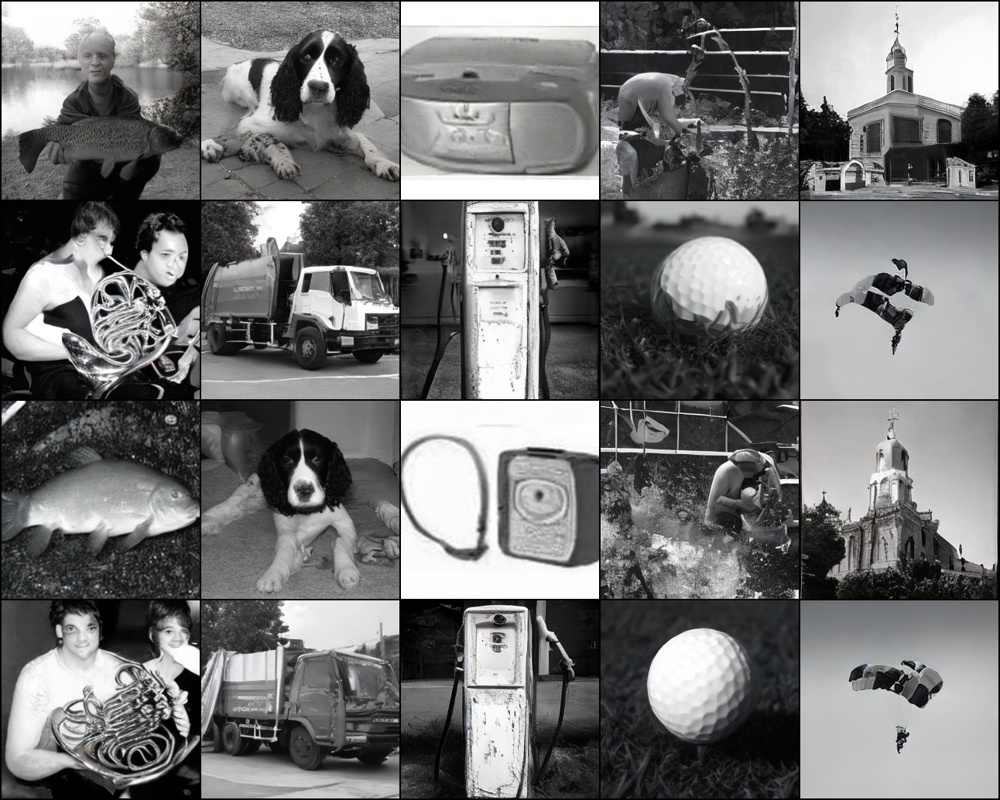

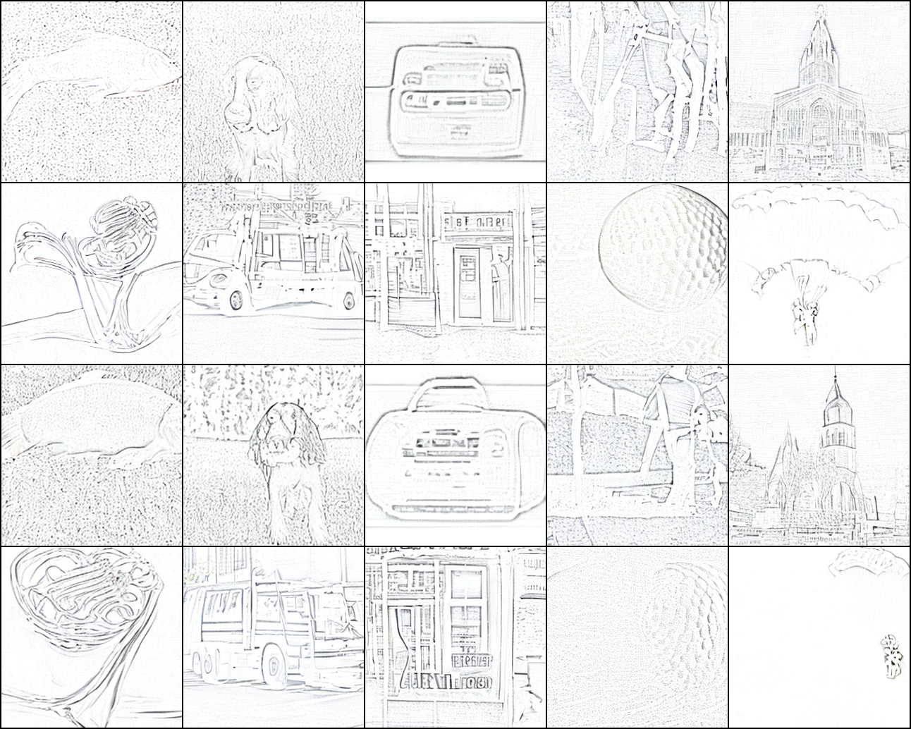
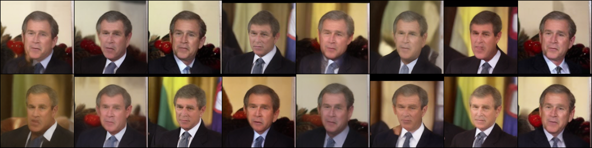
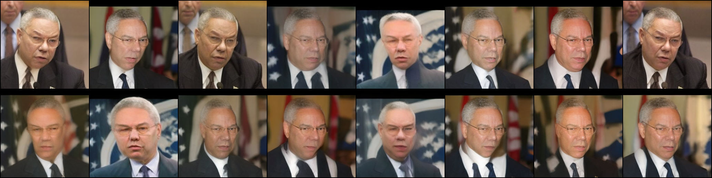
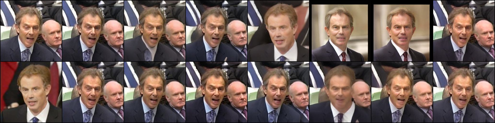
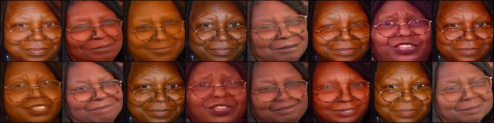
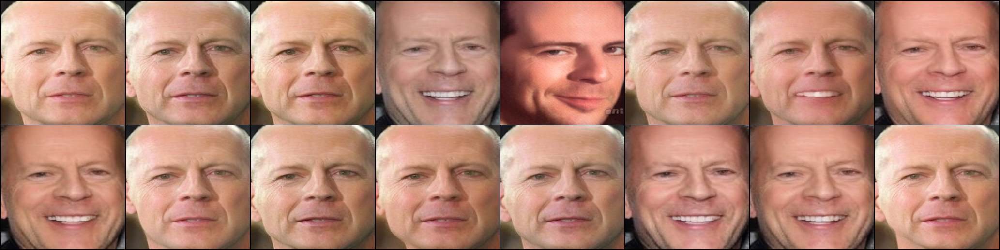
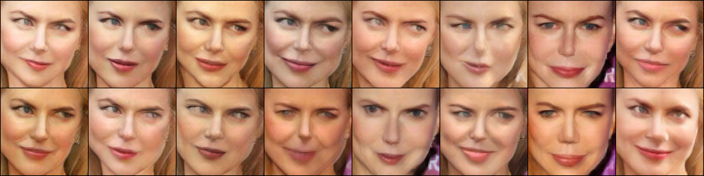
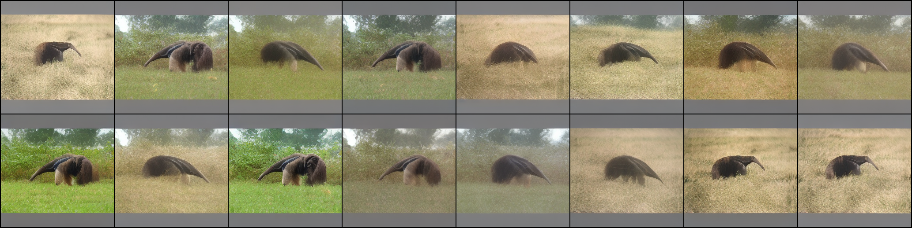
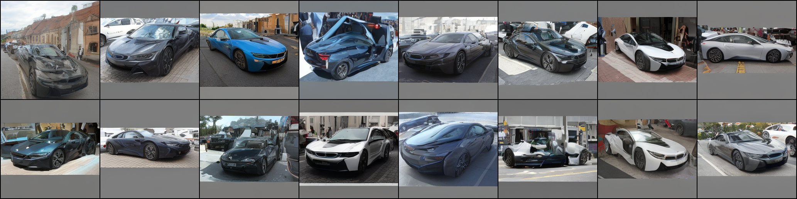
We apply FTN-LoRA to SiT, a diffusion transformer, and teach it eleven domains in sequence: visual styles, individual faces, an animal, and a car. The model shares a base network while learning different assemblies of low-rank weight changes. Four example images are used to recover the appropriate learned configuration.
Eleven domains, a small retained memory
The smallest memory setting retains only 5% of each domain’s training images—416 examples in total. After all eleven domains have been learned, the model still generates recognizable examples of earlier ones.
Earlier domains remain accessible
At the end of the sequence, the report’s target-recognition scores reach 95–100% across the six learned identities, 98% for the giant anteater, and 88% for the BMW i8. The monochrome, poster, and sketch domains also remain substantially closer to their targets than before training.
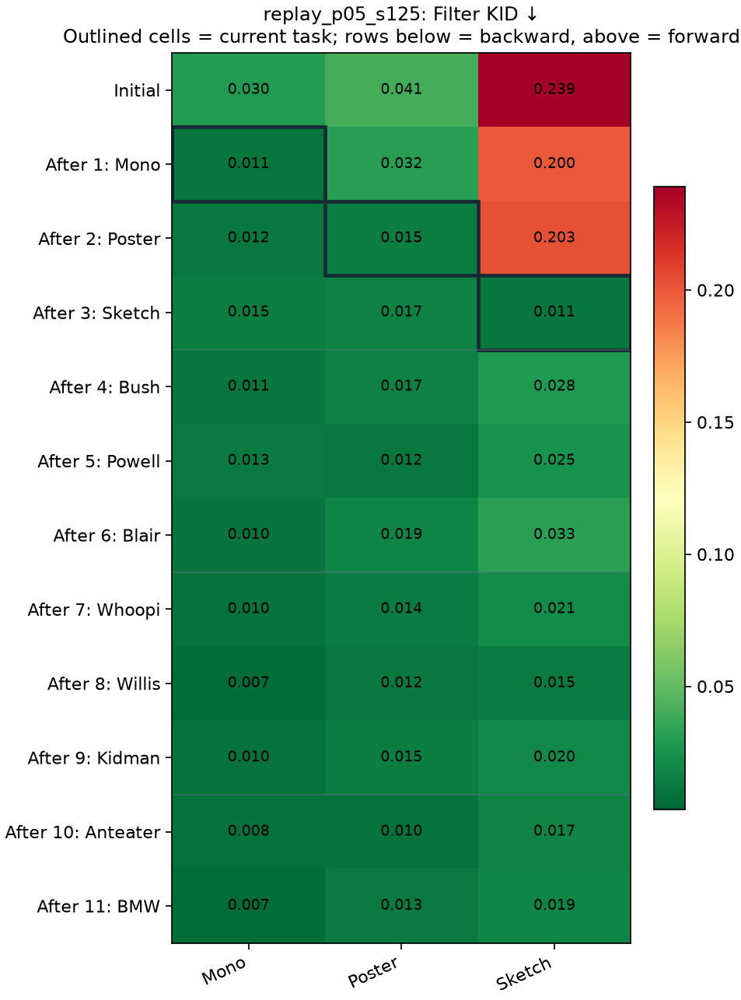
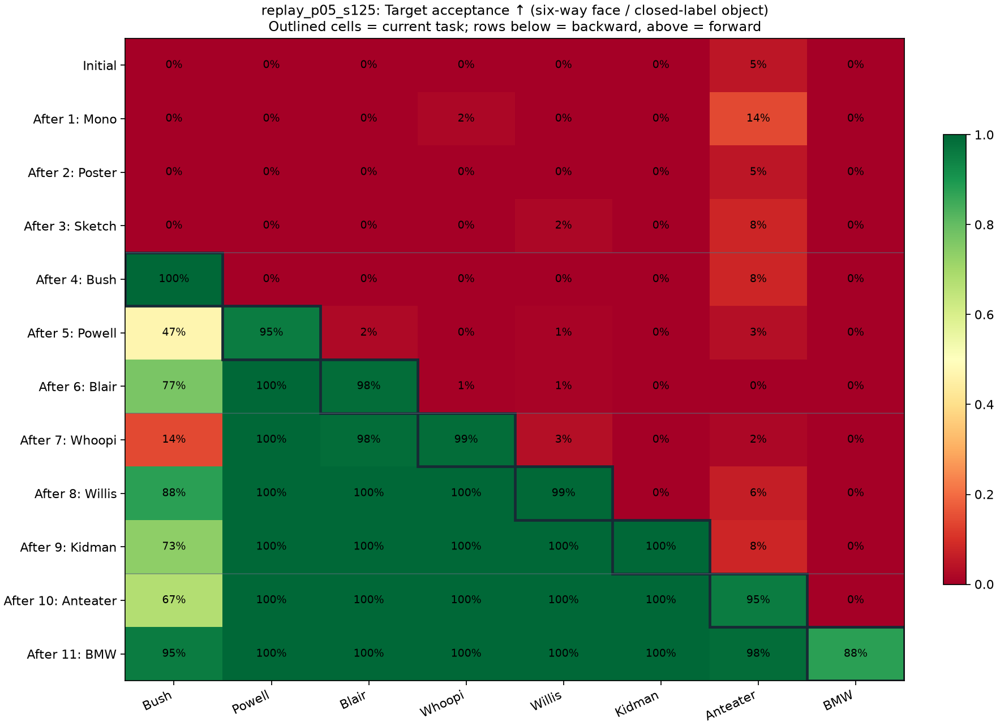
This is continual adaptation with a shared generative model and a small memory of the past. New domains accumulate while earlier ones remain available through their assemblies.